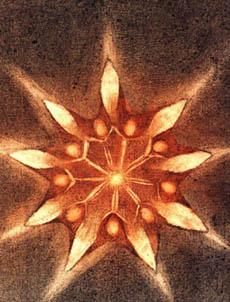

Ale pøemìna probíhala tak pomalu, ¾e si lidé na ni zvykli a nevyvolávala údiv. Kdy¾ lovci stoupali do odlehlých míst, kde honili zajíce nebo divoèáky, dobøe si v¹imli, ¾e stromù je stále víc a víc, ale pøièítali to pøirozeným rozmarùm pùdy. Proto nikdo na dílo toho mu¾e nesáhl. Kdyby to tu¹ili, zlobilo by je to. Ale byl mimo jakékoliv podezøení. Kdopak by byl ve vesnicích i v úøadech schopen pøedstavit si hou¾evnatost, plnou nádherné u¹lechtilosti.
Od roku 1920 jsem v¾dycky aspoò jednou za rok nav¹tìvoval Elzéarda Bouffiera. Nikdy jsem nevidìl, ¾e by polevil ani ¾e by zapochyboval. A pøece kdoví, zda tam i Bùh nepomáhá. Nepoèítal jsem jeho zklamání. Ale snadno si pøedstavíme, mìl-li dosáhnout takového úspìchu, ¾e musel pøekonat i èetné strasti. Aby zajistil vítìzství takovému zaujetí, musel se potýkat s beznadìjí. Za celý rok nasázel buky. Tìm se daøilo je¹tì líp ne¾ dubùm.
Abychom mìli o tak výjimeèné povaze témìø pøesnou pøedstavu, nesmíme zapomenout, ¾e se vyvíjela v naprosté samotì. V tak velké samotì, ¾e si ke konci ¾ivota odvykl mluvit. Nebo snad to nepokládal za nutné?

V roce 1933 ho nav¹tívil u¾aslý hajný. Ten zamìstnanec mu úøednì oznámil pøíkaz, ¾e nesmí venku rozdìlávat oheò. Mohlo by to toti¾ ohrozit rùst tohoto “pøírodního” lesa.
A naivní hajný prohlásil, ¾e je vidìt, jak les roste sám od sebe. V tu dobu Eltéard Bouffier chodil sázet buky dvanáct kilometrù od domu, kde bydlel. Aby nemusel chodit tam a zase zpìt, v¾dy» mu bylo tehdy u¾ sedmdesát pìt let, zamý¹lel postavit si z kamene chatu pøímo na místì, kde stromy sázel. Uskuteènil to o tok pozdìji.
V roce 1935 si pøi¹la prohlédnout ten “pøírodní” les opravdová úøední komise. Pøi¹el vysoký pøedstavitel správy vod a lesù, poslanec a technici. Mìli mnoho zbyteèných øeèí. Rozhodli, ¾e se musí nìco udìlat, ale neudìlali nic. Do¹lo v¹ak k jednomu u¾iteènému rozhodnutí: les byl dán pod ochranu státu a nesmìlo se tam pálit uhlí. Bylo pøece nemo¾né, aby takový krása tìch mladých stromù v plné síle nìkoho nepodmanila. I poslance uvedla v nad¹ení.
Mìl jsem pøítele mezi vedoucími lesníky. Byl v té delegaci. Vysvìtlil jsem mu, v èem spoèívá ta záhada. V dal¹ím týdnu jsme ¹li oba za Elzéardem Bouffierem. Na¹li jsme ho v pilné práci, dvacet kilometrù od místa, kam pøi¹la inspekce.
Vedoucí lesník nebyl nadarmo mým pøítelem. Dovedl tu práci ocenit a dokázal mlèet. Nabídl jsem jim pak vajíèka, která jsem vzal s sebou. Rozdìlili jsme jídlo na tøi díly a nìkolik hodin jsme mlèky pozorovali krajinu.
V místech, odkud jsme pøi¹li, rostly stromy ¹est a sedm metrù vysoké. Vzpomínal jsem, jak vypadal kraj v roce 1913. Byla tam tehdy pustina. Pokojná a pravidelná práce, svì¾í vzduch v kopcích, skromnost a zvlá¹» du¹evní vyrovnanost daly tomuto starci témìø okázalé zdraví. Øíkal jsem si, na kolika hektarech je¹tì asi stromy zasází.
Nì¾ mùj pøítel odjel, jen krátce pøipomenul nìkteré døeviny, pro které se mu zde pùda zdála vhodná. Ale nijak nenaléhal. “To proto,” øekl mi potom, “¾e ta dobrá du¹e toho ví o tom víc ne¾ já.” Kdy¾ jsme ¹li asi hodinu, po kterou¾to dobu pøemý¹lel, dodal: “Ví o tom víc ne¾ v¹ichni ostatní. Objevil znamenitý prostøedek, jak být ¹»astný!”
Zásluhou vedoucího byl chránìn nejen les, ale i ¹tìstí Elszéarda Bouffiera. Pro ochranu urèil tøi hajné a byl k nim tak pøísný, ¾e zùstávali lhostejní k jakýmkoli úplatkùm, kdyby jim je døevorubci nabídli.